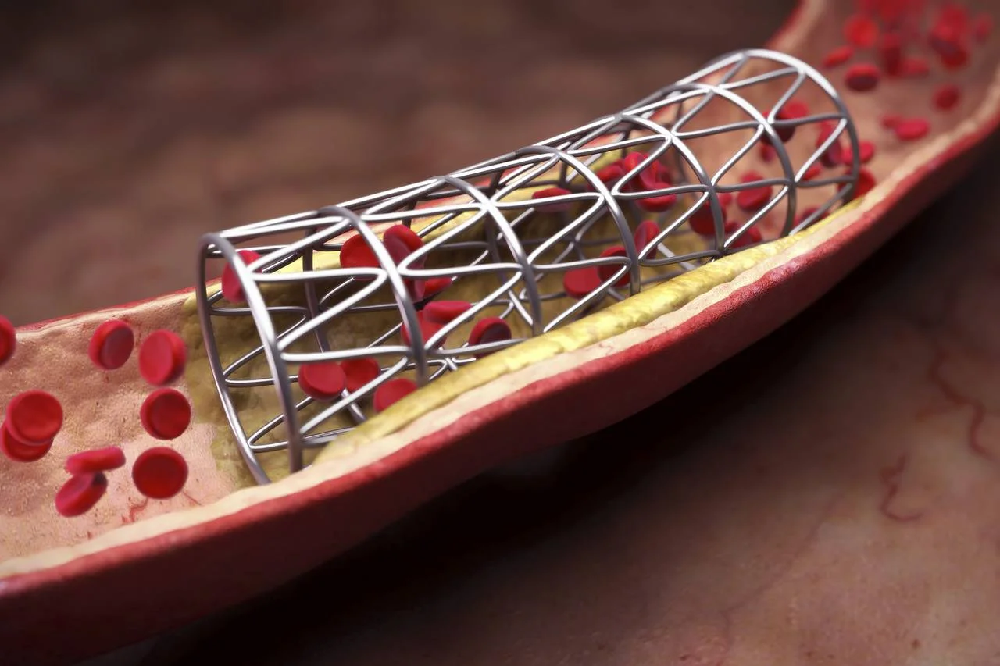

Video Edukasi: Pahami Stent dan Hidup Sehat Setelah PCI
Tekan gambar untuk memutar video. Setelah menonton, baca materi dan lakukan Post-Test.

Apa Itu Stent?
Stent adalah rangka logam kecil yang dipasang pada pembuluh jantung untuk menjaga pembuluh tetap terbuka. Stent tidak dapat berpindah posisi dan tidak berkarat.
Apa Itu PCI?
PCI adalah tindakan medis untuk membuka sumbatan pada pembuluh jantung menggunakan kateter, balon, dan pemasangan stent.
Obat Antiplatelet (DAPT)
Obat antiplatelet membantu mencegah pembekuan darah setelah pemasangan stent. Penting untuk minum obat sesuai anjuran dokter.
Diskusi & Tanya Jawab (via WhatsApp)
Masukkan pertanyaan Anda. Klik tombol kirim untuk membuka WhatsApp dan mengirimkan pertanyaan kepada tim edukasi.
Catatan: Saat ini fitur mengarahkan ke WhatsApp. Nomor penerima default adalah +62XXXXXXXXXXX. Mohon ganti dengan nomor PIC yang benar.